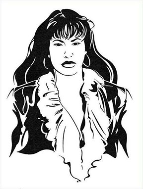

Latin Queen
Selena Quintanilla was given credit for paving the way of Latin American singers especially in the United States. Her early records weren’t much of a success. She was signed on with Freddie label who was the oldest record label known in Texas. This was in was in 1984 and she recorded Mis Primers Grabaciones (My first record). It was an album with the one song, “Ya Se Va.” She switched to another label but didn’t do much better she did however found more success in touring all over for acts of Tejanos. They learned how to mix different music with traditional Tejano music.
She finally found a big record company that was supporting her in 1989. In 1991, her song called “Buenos Amigos” (or good friends) became popular and reached the number one spot in the Billboard’s Latin music. She kept growing from there and she started reaching a wider audience in America. She got married on April 2, 1992 to the lead guitarist, Christopher Perez in her band secretly without her family knowing. Her album Selena Live of March 1994, she won a Grammy Award for having one of the greatest Mexican American Album for selling millions of copies that year. In 1993 she changed with another label with mostly English language artist like Mariah Carey and Madonna. This is when her album Dreaming of You was created but was not released until after she passed away.
All information, pictures, and music is copyrighted. This website is only for educational purposes.